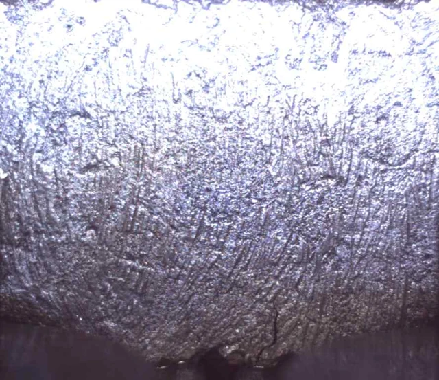
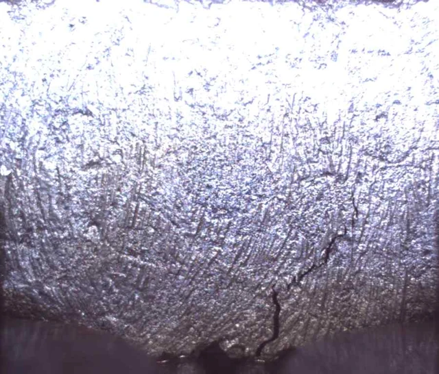
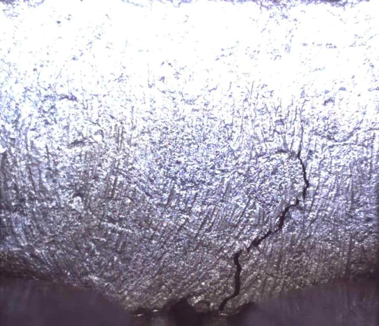

2023 · Direct testing · Crack and load-response analysis
Mastic asphalt & Overlay testing
How do bridge-deck materials respond to repeated displacement?
Research objective
This evaluation concerned mastic asphalt pavement for Godeok Topyeong Bridge, a Han River crossing constructed by Hyundai Engineering & Construction for Korea Expressway Corporation. The work compared cracking behavior in an LMC reference and mastic asphalt from three suppliers.
My contribution
- Prepared latex-modified concrete (LMC) reference specimens and mastic asphalt specimens from three suppliers.
- Performed Texas Department of Transportation (TxDOT) Overlay testing.
- Analyzed load-versus-cycle responses and observed crack progression and documented the findings in a technical report.

Specimen, instrumentation, and crack observation
An Overlay test setup linking the mounted specimen, observation camera, and surface-image display.
Method & research process
- 01Four material groups
- 02Repeated-displacement testing
- 03Load and crack interpretation
The setup connected the mounted specimen with a close-up observation camera. I interpreted load degradation together with the surface observations. The sequence below is from material C, first test, in the project report; its stage labels are preserved. The setup photograph illustrates the apparatus and is not identified as the same specimen.
Same test · Material C, first test · Initial / middle / late stages


Initial stage
Material C · first test


Middle stage
Material C · first test


Late stage
Material C · first test
Godeok Bridge pavement evaluation report (2023), Photo 3.14.
Contribution & output
I combined direct Overlay testing with analysis of load–cycle response and crack progression, and documented the findings in the project technical report.
More testing and process photographs

Texas Overlay specimen preparation
A rectangular mixture specimen held on mounting plates under a weight during Texas Overlay specimen preparation. Adhesive and curing conditions are not inferred.

Overlay bonding and mounting · 2
Preparation of metal plates and bonding areas for an Overlay specimen. This is a preparation view, not evidence of cyclic loading or a fracture result.

Overlay bonding and mounting · 3
Checking Overlay mounting-plate alignment with a steel ruler. Final spacing and test conditions require the procedure and records.